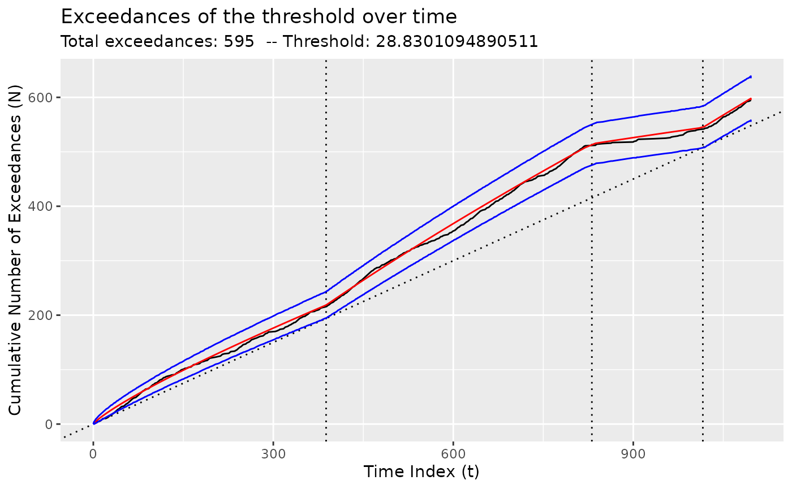
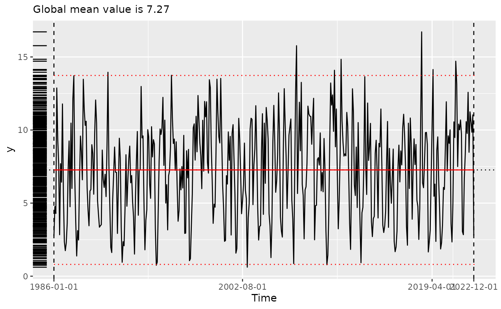

Climate data in tidychangepoint
climate_data.RmdThe tidychangepoint package provides three
climate-related time series.
Central England Temperature
Shi et al. (2022) use changepoint
detection algorithms to analyze a time series of annual temperature data
from Central England. These data are available via CET from
tidychangepoint.
These data go back to 1659, and a simple plot illustrates the increase in temperature in recent years.
plot(CET)
Shi et al. (2022) use a genetic
algorithm to identify changepoints in this time series. The code below
reproduces this analysis. Note that since the genetic algorithm is
random, results vary. Shi, et al. used a maxiter value of
50,000 in order to obtain the results used in the paper. Here, we use a
much lower value solely in the interest of computational speed. Note
that this algorithm is fitting a “meanshift” model, which estimates the
mean \(\mu_i\) for each of the regions
defined by the changepoint set. The objective function employs the
BIC penalty. One departure from Shi’s implementation is the
use of the log_gabin_population() function to generate the
first generation of 200 (i.e. popSize) possible changepoint
sets. Each data point is chosen uniformly at random with probability
equal to \(\ln{N}\), where \(N\) is the number of observations (362, in
this case).
trend_wn <- CET |>
segment(
method = "ga",
model_fn = fit_meanshift_norm,
penalty_fn = BIC,
population = log_gabin_population(CET),
popSize = 200,
maxiter = 50,
run = 10
)## Seeding initial population with probability: 0.0162752602536624Compare this with the changepoint set discovered by the algorithm:
changepoints(trend_wn)## x30 x41 x266 x331
## 30 41 266 331
changepoints(trend_wn, use_labels = TRUE) |>
as_year()## [1] "1688" "1699" "1924" "1989"The fitness() function returns a named vector with the
value of the objective function from the discovered changepoint set.
fitness(trend_wn)## BIC
## 653.2597Information about the regions, including their means, are shown by
the tidy() function.
tidy(trend_wn)## # A tibble: 5 × 9
## region num_obs min max mean sd begin end param_mu
## <chr> <int> <dbl> <dbl> <dbl> <dbl> <dbl> <dbl> <dbl>
## 1 [0,30) 29 7.88 10.2 8.89 0.543 0 30 8.89
## 2 [30,41) 11 7.29 8.94 8.08 0.496 30 41 8.08
## 3 [41,266) 225 6.86 10.5 9.17 0.593 41 266 9.17
## 4 [266,331) 65 8.52 10.6 9.52 0.437 266 331 9.52
## 5 [331,362] 32 8.86 11.0 10.3 0.497 331 362 10.3By default, glance() returns a summary of the
segmenter that produced the discovered changepoint set.
This includes the fitness, the elapsed time, and the parameters used by
the segmenter.
glance(trend_wn)## # A tibble: 1 × 8
## pkg version algorithm seg_params model_name criteria fitness elapsed_time
## <chr> <pckg_vrs> <chr> <list> <chr> <chr> <dbl> <drtn>
## 1 GA 3.2.4 Genetic <list [1]> meanshift… BIC 653. 9.904 secsHowever, we can also run glance() on the model resulting
from the discovered changepoint set. This provides information about the
model and its fit, including the values of various alternative model
fitting metrics.
It is important to note that only one of these metrics (in this case, BIC) is actually the one used by the segmenter!
## # A tibble: 1 × 11
## pkg version algorithm params num_cpts rmse logLik AIC BIC MBIC MDL
## <chr> <pckg_> <chr> <list> <int> <dbl> <dbl> <dbl> <dbl> <dbl> <dbl>
## 1 tidych… 0.0.1 meanshif… <dbl> 4 0.550 -297. 614. 653. 654. 664.The plot() function returns an informative plot of the
original time series, with the changepoint set and the corresponding
regions demarcated.
plot(trend_wn, use_time_index = TRUE)## Scale for x is already present.
## Adding another scale for x, which will replace the existing scale.
Comparison to reported values
The changepoint set reported by Shi et al. (2022) is \(\{1700, 1739, 1988\}\). For that configuration with the trendshift model with white noise errors, Table 2 of Shi et al. (2022) reports model variance \(\hat{\sigma}^2\) of 0.291, a log-likelihood of -290.02, BIC of 650.74, and MDL of 653.07.
Fitting the trendshift model with white noise errors and running the
glance() function reveals an exact match to the reported
figures.
target_cpts <- c(1700, 1739, 1988)
ids <- time2tau(target_cpts, as_year(time(CET)))
CET |>
fit_trendshift(tau = ids) |>
glance()## # A tibble: 1 × 11
## pkg version algorithm params num_cpts rmse logLik AIC BIC MBIC MDL
## <chr> <pckg_> <chr> <list> <int> <dbl> <dbl> <dbl> <dbl> <dbl> <dbl>
## 1 tidych… 0.0.1 trendshi… <dbl> 3 0.539 -290. 604. 651. 626. 653.Modifying the model to incorporate AR(1) lagged errors also matches the figures from Table 2.
CET |>
fit_trendshift_ar1(tau = ids) |>
glance()## # A tibble: 1 × 11
## pkg version algorithm params num_cpts rmse logLik AIC BIC MBIC MDL
## <chr> <pckg_> <chr> <list> <int> <dbl> <dbl> <dbl> <dbl> <dbl> <dbl>
## 1 tidych… 0.0.1 trendshi… <dbl> 3 0.538 -289. 603. 654. 623. 656.Bogotá particulate matter
The bogota_pm data set contains daily measurement on
particulate matter in Bogotá, Colombia over the three-year period from
2018–2020.
plot(bogota_pm)Here, we use the genetic algorithm from Taimal, Suárez-Sierra, and Rivera (2023) to identify changepoint sets. Note that the model being fit here is the NHPP model, along with the BMDL penalty function.
bog_cpt <- bogota_pm |>
segment(
method = "ga-coen",
maxiter = 50,
run = 10
)## Seeding initial population with probability: 0.0145985401459854
glance(bog_cpt)## # A tibble: 1 × 8
## pkg version algorithm seg_params model_name criteria fitness elapsed_time
## <chr> <pckg_vrs> <chr> <list> <chr> <chr> <dbl> <drtn>
## 1 GA 3.2.4 Genetic <list [1]> nhpp BMDL 1987. 35.125 secs
plot(bog_cpt, use_time_index = TRUE)## Scale for x is already present.
## Adding another scale for x, which will replace the existing scale.
We compare the quality of the fit of the NHPP model using
diagnose().

Medellín rainfall
The times series mde_rain_monthly contains monthly
precipitation readings from locations in and around the city of
Medellín, Colombia.
plot(mde_rain_monthly)Here, we fit the deterministic PELT algorithm (Killick and Eckley 2014).
mde_cpt <- segment(mde_rain_monthly, method = "pelt")
plot(mde_cpt, use_time_index = TRUE)## Scale for x is already present.
## Adding another scale for x, which will replace the existing scale.